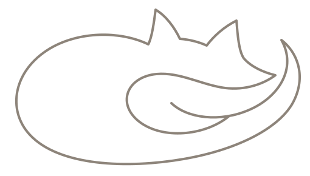

Tsukaima is a native Android client for Hermes Agent, the open-source autonomous agent by Nous Research. Chat with your agent, watch it work, approve tool calls and switch models — from your pocket, talking straight to your own instance.
Hermes keeps running wherever you host it. Tsukaima is just the hand you reach in with.
Paste the server URL and an access token from Hermes. Over LAN, Tailscale, or any tunnel you already trust.
Every Hermes profile shows up with its own conversations. Switch the model from the chip in the top bar, mid-conversation if you like.
Send a message, see the status line change as the agent thinks and runs tools, and sign off on anything risky before it happens.
Most chat apps assume the other side is a person typing. Tsukaima assumes it's a process — so presence, tools and permission are in the design, not bolted on.
Idle, thinking, running a tool, waiting on you — a single serif line under the top bar, with a lavender dot that breathes while the agent is busy. Glanceable from across the room.
While it thinks, the line cycles through quiet verbs instead of a spinner.
Hermes pauses on tool calls you've marked as sensitive. Tsukaima shows the full command in an inline card — approve or deny in one tap, and the agent carries on either way.
Approvals also arrive as notifications, so you can sign off from the lock screen.
Your agent's replies sit flush on the page like a document. Markdown and code render inline, with a copy action on every block. Tool calls and thinking collapse into a slim row — there when you want the detail, quiet when you don't.
Conversations group by Hermes profile, not just by date — so your ops agent and your research agent stay separate even though they share a server. The drawer is the whole navigation; there's no tab bar.
Open a foldable and the drawer becomes a permanent pane; the chat stays a readable column. The web build is the same code at desktop width.
Tsukaima talks directly to one Hermes instance over your own network or tunnel. There's no Tsukaima server, no analytics, no sync service. The token lives in Android's encrypted keystore and never leaves the device except to your Hermes.
# on the box running Hermes $ hermes token create --name pixel hm_3f9a…c21e # in Tsukaima → Settings Server URL https://hermes.local:8000 Token hm_•••••••••••• → Connected · Hermes 4 · 405B
No. Tsukaima is a client, not an agent. It needs a running Hermes Agent to connect to — on a home server, a VPS, or your laptop.
Yes, however you'd reach Hermes itself: Tailscale, WireGuard, a reverse proxy with TLS. Tsukaima just needs a URL and a token.
No. There's no telemetry and no third-party service. All traffic is between your phone and your Hermes.
Whatever your Hermes profile marks as requiring confirmation. Tsukaima surfaces every one of those as an approval card; it doesn't decide for you.
Not planned. Tsukaima is Android-first and leans on Material 3. The web build covers everything else.
A tsukaima (使い魔) is a familiar — a spirit bound to its master and sent out to do the work. The agent runs elsewhere; this is the thing in your hand that's bound to it.

Cream, one lavender, a serif where it matters — the agent is loud.
Free, open source, no account. Install, paste a token, start talking.